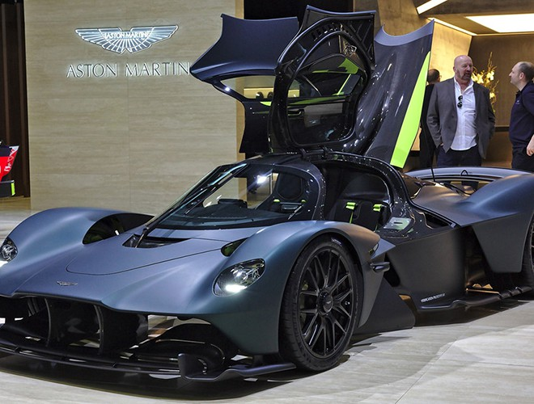

Chiếc xe thể thao này là sản phẩm hợp tác giữa Aston Martin và Red Bull Racing để phát triển một chiếc xe theo định hướng đường đua hoàn toàn có thể sử dụng và thú vị như một chiếc xe đường trường, được hình thành bởi Adrian Newey, Tiến sĩ Andy Palmer, Christian Horner và Simon Spoule. [4] Các nhà sản xuất ô tô tuyên bố danh hiệu xe chạy hợp pháp trên đường phố nhanh nhất trên thế giới cho nó. [5] Adrian Newey , [6] Giám đốc kỹ thuật của Red Bull Racing và là nhà thiết kế F1 thành công nhất thế giới đã hỗ trợ thiết kế chiếc xe. [7]